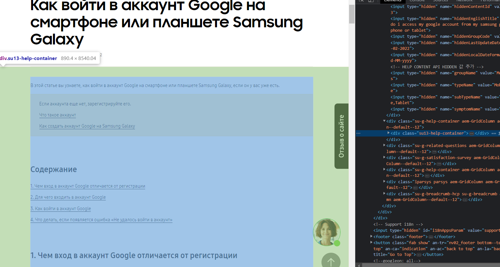
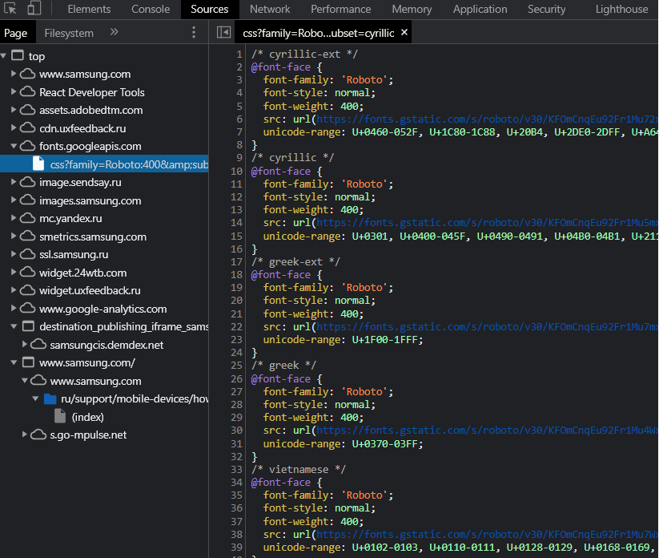
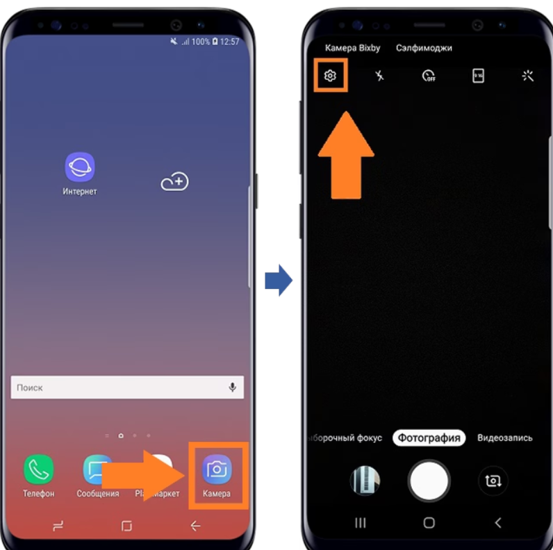
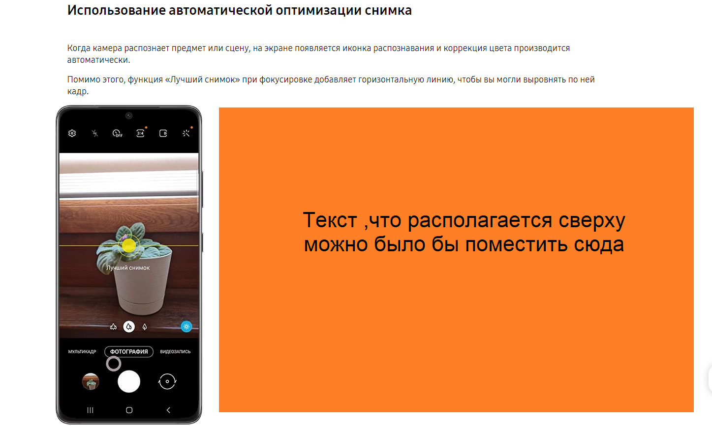
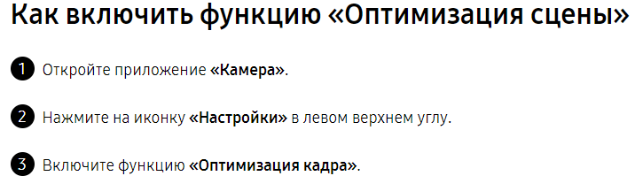

Задание №1
Отредактируйте заголовок и текст так, чтобы он был готов для публикации на сайте. Примените инфостиль и SEO оптимизацию. Итоговый вариант должен соответствовать по стилистике текстам в примерах ниже: https://www.samsung.com/ru/support/mobile-devices/how-can-i-create-a-google-account-on-samsung-galaxy/ https://www.samsung.com/ru/support/mobile-devices/no-mobile-network/ https://www.samsung.com/ru/support/tv-audio-video/where-can-i-find-free-channels-on-my-samsung-tv/
Решение №1
«Что такое вызовы по Wi-Fi / Как работает функция "Звонок через Wi-Fi"»
"Вызовы по Wi-Fi" - это возможность осуществлять звонки с помощью доступа к интернету через WI-FI, если у мобильного оператора плохое покрытие в определенной местности. Доступность зависит от оператора.
Важно!
Вызовы по Wi-Fi / Wi-Fi calling не будет работать, если:
- Необходимая SIM-карта в режиме Только 2G/Только GSM или не выбрана для передачи данных
- Включен авиарежим
- Установлена не последняя актуальная версия ПО
- Устройство не РСТ (buyer код не SER)
Какие операторы поддерживают Вызовы по Wi-Fi:
Смотри ниже. Доступность сервиса отличается в зависимости от оператора и региона.
Как включить / выключить:
Опустите "шторку" и включите/выключите пункт "Вызовы по Wi-Fi"
Данный пункт не будет отображаться в "шторке", если сеть передачи данных
Платная ли услуга,сколько стоит:
Уточнять у оператора.
Задание №2
1) В приведенной верстке добавьте ещё один столбец для четвертой платежной системы «Киберсофт».
2) Добавьте для банка «Авангард» и банка АО "Банк Акцепт" поддержку платежной системы «Киберсофт»
(проставьте в столбце «Киберсофт» галочку поддержки для этих банков).
Решение №2
Список партнеров и банков в России
В Samsung Pay можно добавить карты следующих партнеров и банков:
| Банк | Mastercard | Visa | Мир | Киберсофт |
|---|---|---|---|---|
| АКБ "Абсолют Банк" ПАО | ✓ | |||
| Банк Авангард | ✓ | ✓ | ✓ | |
| ООО "Автоторгбанк" | ✓ | |||
| Банк Агророс | ✓ | ✓ | ||
| ПАО Банк "АЛЕКСАНДРОВСКИЙ" | ✓ | ✓ | ||
| АТБ | ✓ | ✓ | ✓ | |
| АК БАРС Банк | ✓ | ✓ | ✓ | |
| АО "Банк Акцепт" | ✓ | ✓ |
Задание №3
Переведите текст для публикации в статье на русский язык. Примените инфостиль и SEO оптимизацию.
To minimize battery power’s consumption related to charging information displayed on Lock screen, a new concept is applied from Android R OS devices. According to this, when ‘Show charging information’ (Settings > Display > Show charging information) option is activated on new Android R OS software version, the battery level and estimated time that had been exposed continuously to the Lock screen while charging appear only for 5 minutes after fully charging. This is a new concept to prevent battery consumption due to unnecessary screen turn on after full charging. If you turn on the ‘Show always’ of Always On Display(Settings > Lock screen > Always On Display) feature, charging information is displayed along with the clock information even after being fully charged as before.
Решение №3
На устройствах Android R OS применяется новая концепция, которая помогает уменьшить потребление заряда батареи, связанное с отображением информации о зарядке на экране блокировки. При активации опции "Показывать информацию о зарядке" (Настройки > Дисплей > Показывать информацию о зарядке) на новой версии программного обеспечения Android R, уровень заряда батареи и примерное время зарядки будут отображаться на экране блокировки постоянно. Однако, после полной зарядки, экран блокировки будет активен только в течение 5 минут, чтобы предотвратить излишнее потребление энергии от необязательного включения экрана после полной зарядки. Эта инновационная концепция направлена на снижение потребления энергии батареи и обеспечение более эффективного использования устройства на базе Android R OS.
Если вы включите "Показывать всегда" в функции "Всегда включенный дисплей" (Настройки > Экран блокировки > Всегда включенный дисплей) характерная черта: информация о зарядке будет отображаться вместе с информацией о времени на часах даже после полной зарядки, как раньше.
Ключевые фразы, которые были учтены при оптимизации для SEO:
- Устройства Android R OS
- Новая концепция
- Потребление заряда батареи
- Отображение информации
Задание №4
Напишите, пожалуйста:
1) Какому элементу кода принадлежит отступ?
Решение №4.1
На изображении будет нагляднее, например в размерах @media only screen and (min-width: 768px) and (max-width: 1440px) используется padding: 2.77777778vw 9.86111111vw 1.66666667vw 9.86111111vw
Решение №4.2
2) Какие шрифт и размер используются для заголовка «Как войти в аккаунт»?Зависит от девайса на котором смотрю, например @media screen and (max-width: 1440px) размер font-size: 4.16666667vw , шрифт наглядно на изображении ниже 
Задание №5
Найдите на сайте https://www.samsung.com/ru/support/ статью о том, как включить оптимизацию снимков на смартфоне. Напишите, что на ваш взгляд, можно улучшить в статье?Решение №5
Статья тут ✓С учетом эстетического восприятия, мне кажется, что имеется возможность выбрать более привлекательные и элегантные формы стрелок.
Эта часть страницы выглядит пустой, возможно имеет смысл сделать текст справа , а во время адаптивной вёрстки при уменьшении дисплея поставить текст обратно сверху
Также я бы убрал все точки, потому что в интернете они воспринимаются неуместно или как грубость
 Статья ббс на эту тему